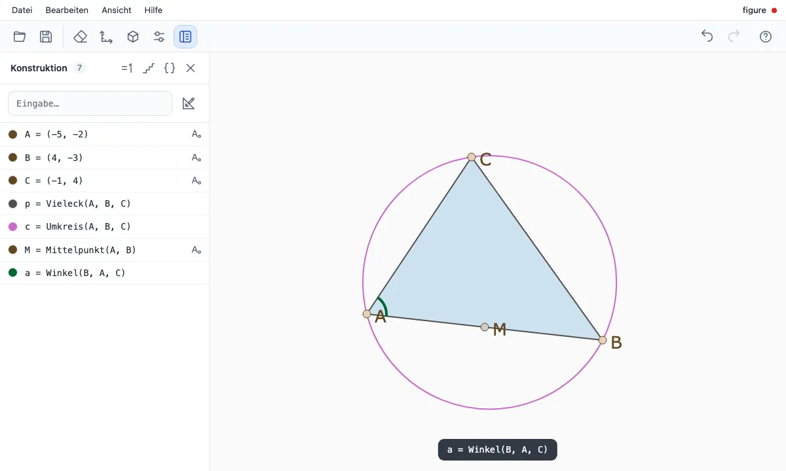
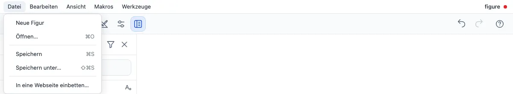

Die Oberfläche

Die Menüleiste

| Menü | Befehle |
|---|---|
| Datei | Neue Figur, Öffnen… (Strg O), Speichern (Strg S), Speichern unter… (Strg Umschalt S) |
| Bearbeiten | Rückgängig, Wiederherstellen, Löschen, Radierer |
| Ansicht | Koordinatensystem, 3D-Ansicht, Konstruktionsverlauf, Eigenschaften, Vollbild (mit Esc verlassen): Ein Häkchen zeigt, was angezeigt wird |
| Werkzeuge | Benutzerhandbuch, DocTools, Lizenz & GitHub, Über… |
Rechts der Dateiname der Figur, in Chrome und Edge (Speichern). Die Menüleiste erscheint nicht, wenn DocGeo in eine andere Seite eingebettet ist, etwa in DocTools.
Die Aktionsleiste
| Schaltfläche | Funktion | |
|---|---|---|
| Öffnen |
.dgo, .dgp,
.ggb
|
|
| Speichern | als .dgo |
|
| Radierer | Objekte aus- oder einblenden (Radierer) | |
| Koordinatensystem | Achsen und Gitter; in 3D Dreibein und Boden | |
| 3D-Ansicht | in den Raum wechseln oder zur Ebene zurückkehren (3D) | |
| Eigenschaften | rechtes Feld (Eigenschaften) | |
| Konstruktion | linkes Feld | |
| Rückgängig, Wiederherstellen | Strg Z, Strg Umschalt Z oder Strg Y | |
| Benutzerhandbuch | öffnet das Handbuch in der Sprache von DocGeo in einem neuen Tab |
In der Mitte zeigt der Kontextbereich den Namen und die Aktionen des ausgewählten Objekts.
Das Feld „Konstruktion“
-
Eine Zeile pro Objekt, in der Reihenfolge der Konstruktion:
M = Mittelpunkt(A, B). Jede Zeile lässt sich bearbeiten (Neudefinition). - Der Punkt am Zeilenanfang blendet das Objekt aus oder ein; am Zeilenende zeigt seinen Namen.
- Kopfzeile: Anzahl der Objekte, Werte, Schritt für Schritt, neues Programm.
- Eingabezeile „Eingabe…“ und Schaltfläche des Werkzeugmenüs.
- Das Überfahren einer Zeile lässt das Objekt aufleuchten, und umgekehrt.
Der Hinweis
Die Sprechblase unten in der Figur zeigt, was erwartet wird („Wählen Sie einen Punkt“), die Zeile, die das Werkzeug schreiben wird, und Fehler in Rot. Ihr Kreuz ✕ verlässt das aktuelle Werkzeug.
Navigieren
| Aktion | Geste |
|---|---|
| Ansicht verschieben | eine leere Stelle ziehen; rechte Maustaste überall |
| Zoomen | Mausrad oder Trackpad, um den Zeiger |
| 3D-Figur drehen | rechte Maustaste, oder ein Finger auf einer leeren Stelle |
| Perspektive, Boden (3D) | P, S |
Die runde Schaltfläche unten links, vorhanden, wenn die Figur Animationen enthält, hält sie an oder startet sie neu.
Rückgängig machen
Jede Änderung ist ein Schritt eines einzigen Stapels: Konstruktion, Löschen, Verschieben, Stil, Einstellung des Koordinatensystems, Wechsel in 3D. Zoomen, Verschieben und Drehen der Ansicht gehören nicht dazu.
Die Felder
- Ihr innerer Rand lässt sich ziehen, um die Größe zu ändern; ein Doppelklick stellt die Standardbreite wieder her.
- Unter 900 px Breite ist nur ein Feld zugleich geöffnet; bei 600 px und weniger startet das Feld „Konstruktion“ geschlossen, die Eigenschaften überdecken die Figur, und die Wahl eines Werkzeugs schließt die Felder.